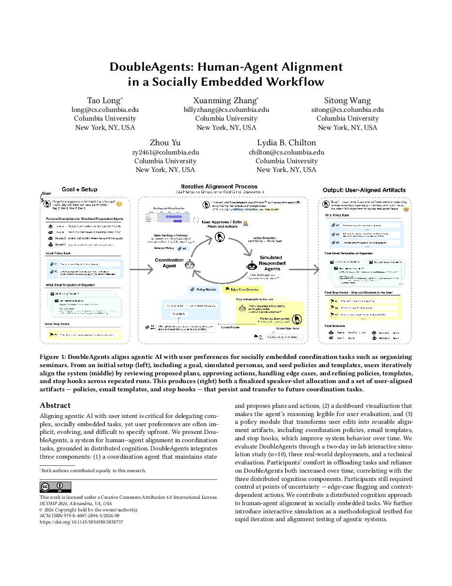
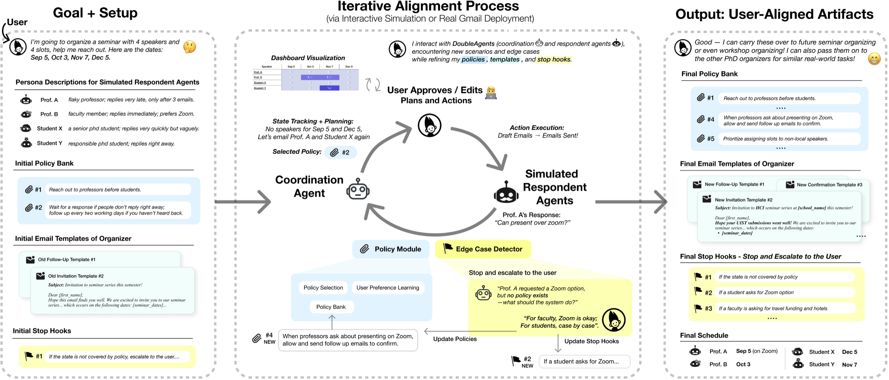
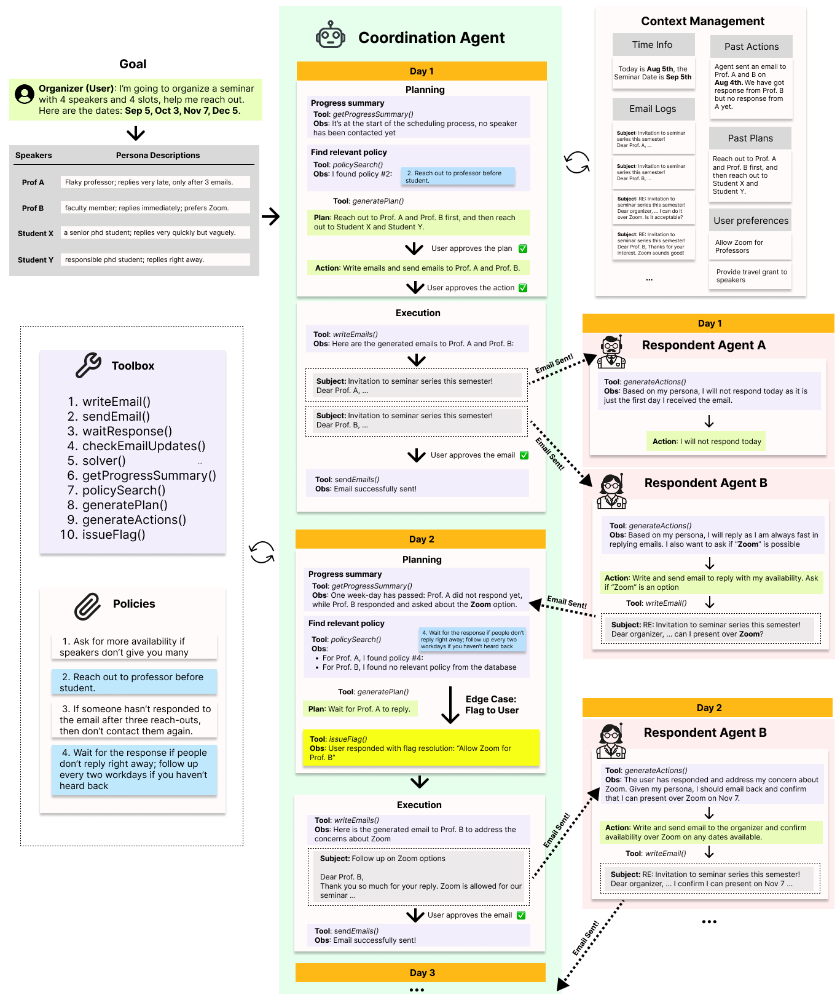
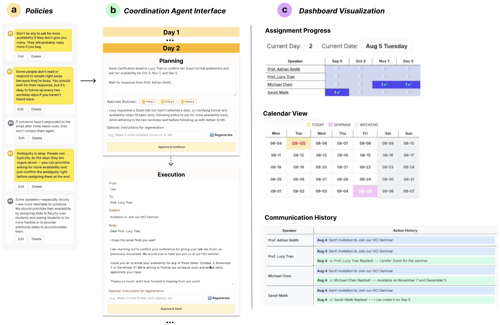
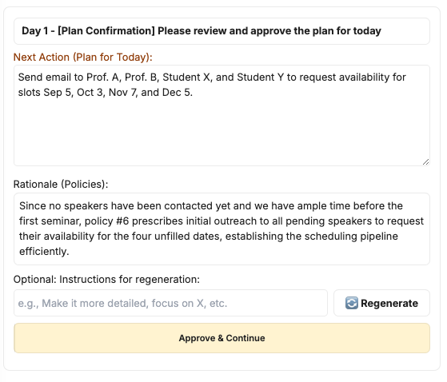
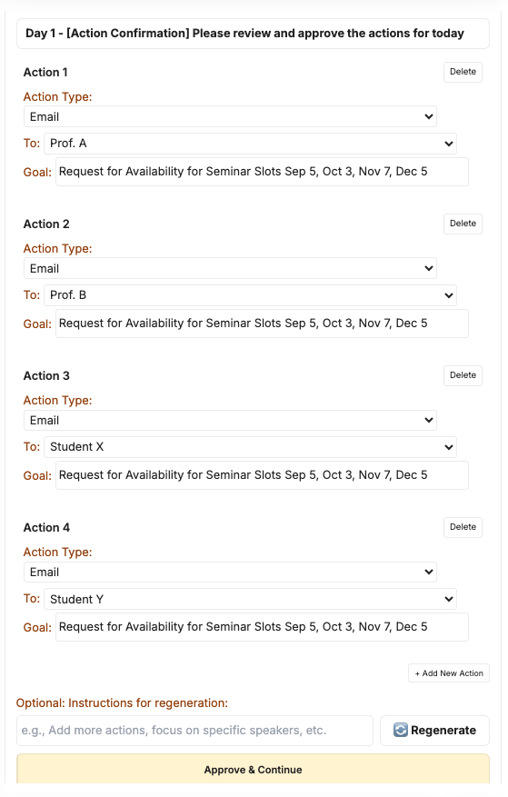
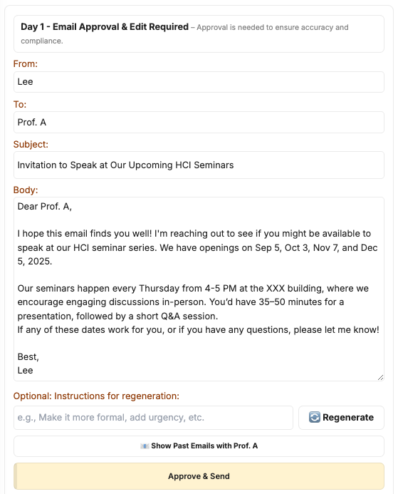
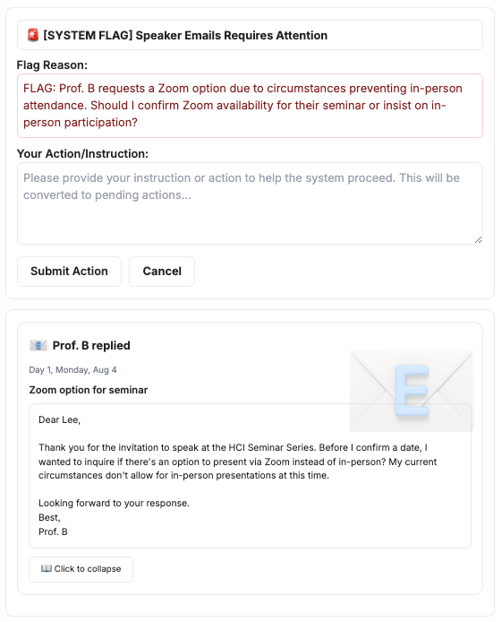
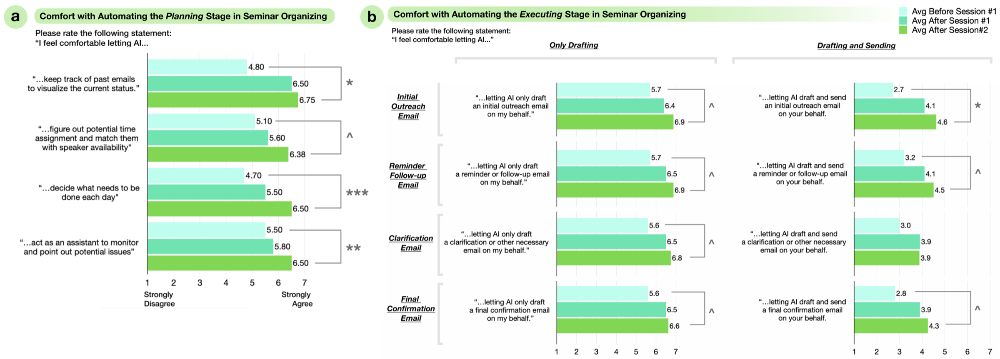

DoubleAgents: Human-Agent Alignmentin a Socially Embedded Workflow
Columbia University
HCOMP 2026

Agents can only act on your behalf if they are aligned with preferences you may not be able to spell out upfront.
— DoubleAgents makes alignment something you do by using the system.
1/ Why Alignment Is Hard: Socially Embedded Tasks
In a socially embedded task, an agent acts on your behalf, toward other people, over weeks. Alignment is what makes delegating it possible: the goal is to offload as much as possible while keeping control. But alignment is hardest exactly here, in three ways. We study this in a concrete setting: organizing a university seminar series over email.
“Who should I follow up with today?”
C1 · Hard, high-stakes taskWeeks of tracking, follow-ups, and edge cases across many people, and every action lands on a real person. You can't unsend an email.
NeedOffload, but keep control“Who's been scheduled? How many emails have I sent asking for Lydia's availability?”
C2 · Opaque agentUsers can't see where things stand or why the agent wants to act, so they can't judge a proposal before it goes out.
NeedInspectability“A faculty member and a student both say they can only do 9/28…”
C3 · Hidden intent, hard to elicitTacit norms (when (not) to act, when (not) to ask, what tone to use) surface only when users see the agent act, and keep evolving.
NeedElicit intent over time+ And you can't practice on real people.
Users discover what they want by watching the agent act, but every trial run reaches a real inbox. So alignment can't be specified upfront; it has to be reached through repeated interaction, and that needs a safe place to repeat.


Summary
Delegating socially embedded work is not a one-time specification problem. Users need to offload while keeping control (C1), inspect what the agent is doing (C2), and have their intent captured as it emerges (C3), with a safe place to practice before real stakes.
2/ DoubleAgents: A Distributed-Cognition System
We draw on distributed cognition (Hutchins, 1995): in hard sociotechnical systems like a cockpit, no single person holds all the cognition. It is spread across people and artifacts through three mechanisms: state tracking, representation, and adaptive policies. DoubleAgents maps each mechanism to one component that answers one challenge, plus a simulation mode for rehearsing before going live.
State tracking → Coordination agent
Tracks every thread over weeks, plans next steps, and proposes actions. The user approves before anything is sent, and the agent flags edge cases it isn't sure about.
e.g., plans who to reach out to and drafts the emails; you approve.
Representation → Dashboard
Temporal, social, and procedural views make task state and the agent's reasoning legible at a glance, so users can judge a proposal before it goes out.
e.g., time constraints, availability collected so far, email history.
Adaptive policies → Policy module
Every user edit becomes a reusable artifact, so intent is captured as it emerges and carries over to future coordination tasks.
e.g., organizing policies & strategies, email templates, when to escalate (stop hooks).
+ A safe place to repeat → Interactive simulation
LLM-simulated speakers compress weeks of coordination into minutes, so users can exercise all three components and surface edge cases before real stakes. It works like unit testing, except that correctness is user-specific.





Summary
Rather than asking users to write the perfect prompt, the system lets them correct it in context. Every correction is captured as an artifact the agent can apply next time.
3/ Study, Deployments & Discussion
We evaluated DoubleAgents through a two-day in-lab interactive simulation study (n=10), three real-world deployments, and a technical evaluation.

Simulation prepared organizers for the real thing
Two organizers used DoubleAgents for real email-heavy coordination. Both attributed their willingness to offload to explicit, editable policies and templates that made the agent's reasoning legible, and used simulation with real invitee names and persona-specific edge cases to refine them first.
Deployment still surfaced unanticipated dynamics that needed ongoing policy and tone adjustments—as Q1 put it, “real life is super complex.”
Contributions
- A distributed cognition approach to human-agent alignment in socially embedded tasks.
- DoubleAgents, which maps each distributed-cognition mechanism to a component: state tracking → a coordination agent (offload, but keep control), representation → a dashboard (inspectability), and adaptive policies → a policy module that turns user edits into reusable alignment artifacts (elicit intent).
- Interactive simulation as a methodological testbed, evaluated in a two-day study (n=10), three deployments, and a technical evaluation.
BibTeX
If this work is useful to you, here is a citation you can copy.
@inproceedings{long2026doubleagents,
author = {Long, Tao and Zhang, Xuanming and Wang, Sitong and Yu, Zhou and Chilton, Lydia B},
title = {DoubleAgents: Human-Agent Alignment in a Socially Embedded Workflow},
year = {2026},
isbn = {9798400728945},
publisher = {Association for Computing Machinery},
address = {New York, NY, USA},
url = {https://doi.org/10.1145/3834580.3838737},
doi = {10.1145/3834580.3838737},
booktitle = {Proceedings of the 2026 ACM Conference on Human-AI Complementarity and Alignment},
pages = {23–44},
numpages = {22},
location = {Alexandria, VA, USA},
series = {HCOMP '26}
}